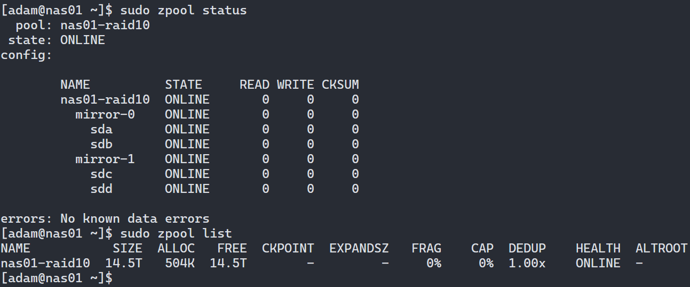
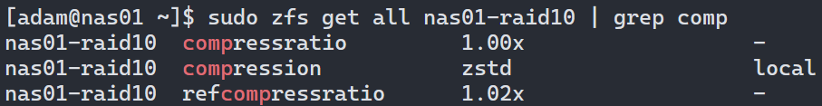

RHEL With ZFS
Using ZFS with Red Hat Enterprise Linux⌗
ZFS is not officially supported due to potential licensing issues however this shouldn’t be a problem for homelab use, we will just need to do some extra steps!
Official guide to getting ZFS running on various Linux distros here
Install ZFS Kernel Module⌗
We will use the kABI-tracking kmod rather than DKMS so installing newer kernel versions generally shouldn’t require re-compiling the module
Add the OpenZFS repo⌗
sudo dnf install https://zfsonlinux.org/epel/zfs-release-2-2$(rpm --eval "%{dist}").noarch.rpm
Set and install ZFS kmod⌗
sudo dnf config-manager --disable zfs
sudo dnf config-manager --enable zfs-kmod
sudo dnf install zfs
Once the above completes all OK we are ready to create our ZFS pool!
Create ZFS pool⌗
I have 4x 8TB SATA HDD’s that will be used:
- /dev/sda
- /dev/sdb
- /dev/sdc
- /dev/sdd
I will be creating the ZFS equivalent of RAID10 by creating 2 mirrored VDEV’s each with 2 of the 4 disks
I will be naming the pool ‘nas01-raid10’
sudo zpool create nas01-raid10 mirror /dev/sda /dev/sdb mirror /dev/sdc /dev/sdd
Everything looking good!

Enable Compression at the top level⌗
Next we will enable compression at the top level so any sub-volumes and datasets will inherit this setting
Zstandard is almost always going to be the optimal compression algorithm these days, for all use cases, you can read more about it here
sudo zfs set compression=zstd nas01-raid10
Compression is now enabled at the top level and will be inherited: 